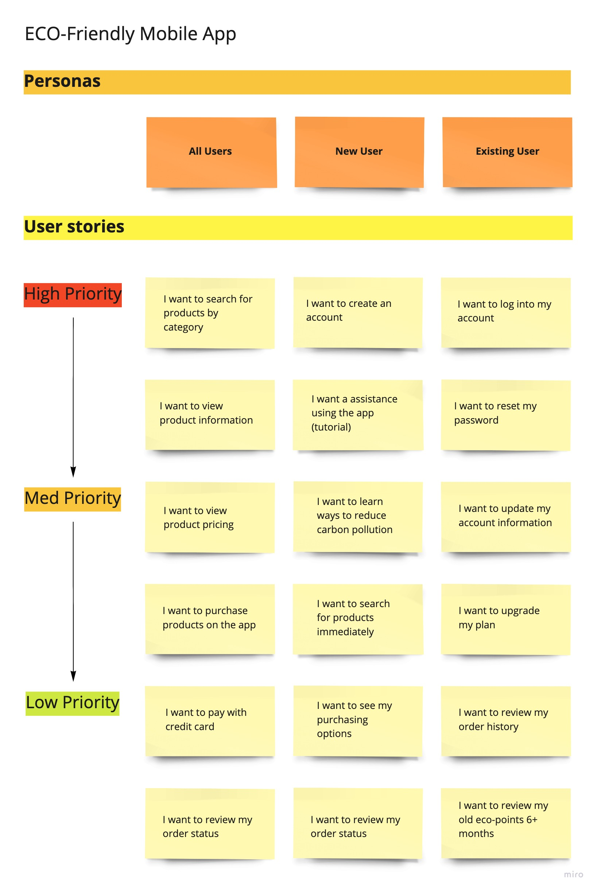

“Be the change you want to see in the world.”
Case Study
ECO
The purpose of this mobile app is to encourage users to buy and replace household items with eco-friendly products to reduce their carbon footprint. The goal is to encourage shoppers to change their shopping behaviors by making it convenient. Also, gamifying the experience to provide users insight into how their purchases are positively affecting environment.
My Role: Research, Strategy, Design, Prototyping, and Testing
01 Problem
The problem is in convincing users to purchase products that will reduce harmful chemical waste and their carbon foot. Educating users on how their shopping behaviors are contributing to the problem and easing the change of that behavior.
02 Solution
To solve for this, a mobile app was designed to find the best deal on eco-friendly products for the household in local markets and online. Changing users behaviors involves showing the significance of their purchases. This is accomplished by using an eco-pointing system for each purchase made to show users how their shopping behaviors can positively affect our environment by replacing items with ECO-friendly products.
Discovery
User Research
To better understand the product and user needs the following research tools were used: compeitive analysis, user survey, and personas.
01 Competitive Analysis
This Competitive Analysis reviews both apps, GoodGuide and Instagram. In designing a mobile app that doesn't exist I had to get creative with the competitive analysis. I found only one mobile app somewhat similar to my product approach. Also, Instagram is a competitor because there are product reviewers and ads within the app geared toward users.
GoodGuide is a mobile app that is closest to the product idea I am working on. They product users with an app that allows you to search for any product by entering the name, scanning a UPC code, browsing categories, and viewing stored bookmarks.
Search/Category layout is simple to use and well thought out.
Better design can provide users with information about their purchasing choices and how it has an impact on the environment.
The rating system implementation is confusing. How do they get this value and what does it mean? No explanation provided.
This app has potential but the concept is not thought out well and the UI is not user-friendly.
Instagram is a mobile app that allows its users to review products to influence their shopping behaviors. In addition, the app follows your likes and interest to offer ads based around products you are likely to purchase. This app will be a competitor to my product design and a great resource for research.
Immediate product insight through videos and photos from a real user. Ads that target the customer's interest and preferences. Strong search engine with easy to find products via hashtags.
To do things better provide simplified searching process for common categories. Also, make suggestions based on recent search history and purchases.
Unless you know of the product or user you are searching for its a hit and miss process to find what you want. Search results too large and overwhelming.
With Facebook integration there is competition for users attention. Also, Instagram provides promo codes/discounts form its users/sponsors.
02 User Survey
A Google Form user survey was conducted to gather feedback on participants shopping behaviors, environmental behaviors, and interest in features of an eco-friendly mobile app.
Of participants agree they purchase only products they are familiar with.
Are equally divided into two opposing groups that disagree or slightly agree to typically purchasing products on sale regardless of brand.
Of participants look for products that are natural, plant-based, and/or made from biodegradable materials.
Of participants I like to try new products.
Of participants agree environmental issues are important to them.
Of participants want to change habits to consider their impact on the planet.
Of participants said cost would prevent them from making a change. With convenience coming in second (50%).
Recycle to reduce their carbon footprint. While 77% using reusable cups, grocery bags, and don’t use paper or foam products.
Disclaimer: Users were able to pick more than one answer on some questions.
Of participants would use an eco-friendly app to find and purchase products that are environment-friendly or waste free.
Would purchase eco-friendly personal hygiene products. With 88% interested in kitchen supplies.
Of participants would like to see data reflecting their reduction of waste within the mobile app.
Of participants want to purchase directly from a store and 50% from the mobile app.
Disclaimer: Users were able to pick more than one answer on some questions.
The findings show that a number of participants are concerned about the environment and how they can alter behaviors to go greener. Also, 46% participants rated environmental issues are very important to them. Participants are familiar with and are shopping for household products that are natural, plant-based, and/or made from biodegradable materials. A mobile service that can make this shopping experience convenient and engaging is something they are open to.
03 Personas
The results of the survey findings were gathered to create personas to design a product that would address the participant's needs. Two personas were created to include the beginner to intermediate user of eco-friendly products. This would cover the needs of newbie that wants to receive eco-knowledge to the experienced users that desires information on how their behavior can impact change. The following personas gave voice to the participants in the following ways: demographics, motivations, and frustrations.

Occupation: Technician
Age: 35
Location: San Diego, CA
Experience: ECO Newbie
Is interested in a mobile app that will educate him on how to change his shopping behaviors by purchasing products that save the environment. He wants to see how his contributions have reduced carbon pollution.
Needs:
* Looking for a tool to provide knowledge and suggestions on how to become more eco-friendly.
* Must provide carbon reduction data and tips.
* Must be convenient to use.
Frustrations:
* Doesn’t know where to start.
* Overwhelmed with information on the internet.
* Needs a simplified way to learn new habits and see results.

Occupation: Business Owner
Age: 25
Location: St.Petersburg, FL
Experience: Environmentalist
Is interested in a mobile app that will simplify the process of finding and purchasing household products that are eco-friendly and/or waster free. She wants to reduce her carbon footprint and exposure to unsafe chemicals.
Needs:
* Looking for a convenient way to find products that support her eco-conscious ways.
* Must be cost-efficient.
* Easy to purchase or find products at a local store.
Frustrations:
* Cost is a big obstacle in preventing change.
* Need products that are of great quality, but easy to find, and affordable.
* Want convenience of information on eco-friendly options to make an educated purchase when shopping online or in the store.
Information Architecture
An audit of the information gathered in the Discovery Phase was performed to establish the foundation of this mobile app. The following resources were created to achieve this structure: User Stores, User Flow, and Sitemap.
01 User Stories
The following users stories were created from the user research and personas to establish and address each users priorities.

02 User Flows
add paragraph summarizing process

03 Sitemap
add paragraph summarizing process

Process
Design Iterations
add paragraph summarizing iterations experience with Sketches and Wireframes
01 Sketches
Sketches help place me in the user's shoes to define the process and journey organically. I can quickly erase and scratch out any mistakes before committing to wireframes. I love getting creative and going through as many iterations as needed before narrowing down a few great options.

02 Wireframes
The wireframes went through many iterations to determine the content to include and in what format that would best serve the user. The iterations underwent preference tests to narrow down the most functional options.

03 Mockups
The feedback gathered from the Wireframe User Testing was used to improve on and drive the direction of the high-fidelity designs. In this round of iterations, improvements to areas that were inconsistent or did not function well for users were addressed.

User Testing
Three types of testing was performed for this case study: card sorting, moderated, and perference testing.
01 Card Sorting Testing
A card sorting test was performed...
[add results and/or video after retesting]
02 Moderate Testing
With the in-person/remote user testing, the participants complete...
[add results and/or video after retesting]
03 Perference Testing
A Preference Test, was preferred to gather insight on the features that participants would find most useful...
[add imagery of new testing? Option A and B?]
Conclusion
01 Lessons Learned
In the beginning of this project, I made the assumption that users want a tool to create and collaborate mostly on their business needs. The survey results found...
02 Next Steps
What are my next steps in this project? mobile? More testing?